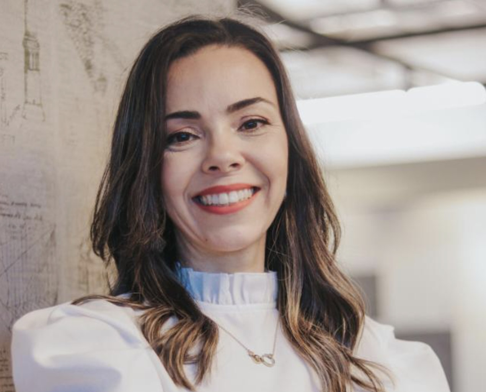
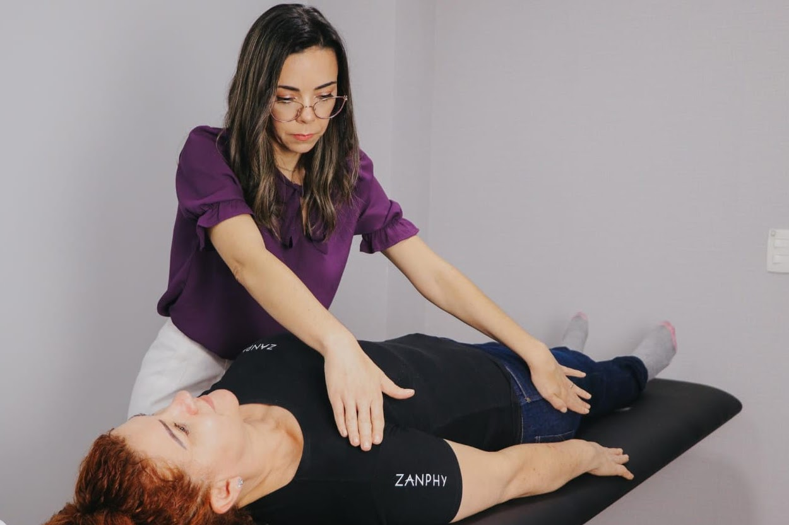

Sou Thaís Figueiredo, fisioterapeuta especializada em Terapia Manual e Microfisioterapia.
📍 R. Dr. Tito Roberto Liberato, n° 83 – São José dos Campos, SP · Sala 303
💬 Agendar pelo WhatsApp Conheça meu trabalho →
Indicado para todas as idades — atendo crianças, adolescentes e adultos.
Cada tratamento é planejado individualmente, respeitando o histórico e as necessidades únicas de cada paciente.
Abordagem que une técnicas convencionais a práticas integrativas, tratando o ser humano de forma completa — corpo, mente e emoções.
Técnicas manuais especializadas para mobilização de articulações, alívio de tensões musculares e restauração do movimento funcional.
Método de toque sutil que identifica e trata as causas primárias de doenças e disfunções, estimulando a autorregulação natural do corpo.
Técnica de toque leve sobre a pele que atua diretamente no sistema nervoso, reduzindo a sensibilidade dolorosa e promovendo relaxamento muscular profundo e duradouro.

Sou fisioterapeuta apaixonada por uma abordagem que vai além dos sintomas. Acredito que cada pessoa carrega em seu corpo a capacidade de se curar — meu papel é abrir esse caminho com cuidado, escuta e técnica.
Atendo em São José dos Campos com foco em tratamentos personalizados, respeitando a singularidade de cada paciente.
Histórias reais de quem já passou pelo processo de cuidado e transformação.
"Foi muito boa a experiência.Eu e meus filhos fizemos as sessões de micro com a Thaís. Ótima profissional."
"Thaís é uma excelente profissional e pessoa! Nossa família foi atendida por ela e o diagnóstico foi preciso e o tratamento também! Em pouco tempo já colhemos resultados positivos sem falar na atenção que ela nos deu antes, durante e depois dos atendimentos! Recomendo de olhos fechados! Aproveito para agradecer publicamente todo carinho e trabalho ❤️"
"Thais é maravilhosa... dá suporte depois das consultas, nos acompanhando na evolução dos desbloqueios. Gentil, educada e assertiva, excelente profissional, recomendo e indico milhões de vezes."
Agende sua consulta agora mesmo. Respondo pelo WhatsApp e fico feliz em tirar todas as suas dúvidas antes da primeira sessão.
💬 Falar no WhatsApp